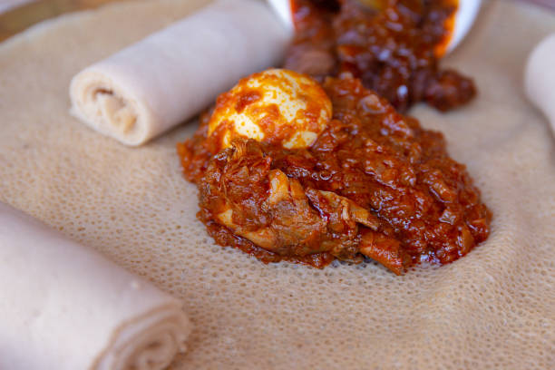

Among this ethnic group, engagement is a family’s affair. The future spouses have no say whatsoever
in their future married life. If for some reason two lovers get married without prior permission from
their respective parents, the boy is obliged to pay a certain sum of money plus an ox to the girl’s
father. The marriage candidate has to fulfill the following requirements:
Same religion, close blood relationship (in Moslem society), no blood relationship whatsoever up to
seven generations (in Christian society), beauty, riches and health.
In engagement, the father of the boy has nothing to offer to the father of the girl. In fact it is the latter who is
expected to give a cow or an ox to the former. Among this ethnic group, the boy and the girl are promised for
engagement by their respective families while still in their mother’s wombs. On the third day of the engagement,
the mother of the betrothed girl prepares boiled legume and distributes it among the villagers in the
hope that her grandchildren might multiply like the sands of the sea.
The most common cereal among this ethnic group is millet. This cereal is ground by women on millstones and the flour into kitcha, ga’at (thick porridge eaten with ghee), taita and hanza. Some cereals are eaten boiled. Most of the utensils used in the preparation of this food items are homemade. The Bilen use diary products as their staple food, specializing in curd. This is because most of the members of this ethnic group are farmers raising livestock. Shiro is also one of the usually prepared dishes. Meat is eaten especially during holidays such as negdet (anniversary of patron saints), Easter, New Year, etc. and in some rare occasions when cattle are about to die for one reason or another they are slaughtered for meat. This is common practice among most of the nine Eritrean ethnic groups.
Footwear has been used irrespective of age or sex from early times among the members of this ethnic group. Before the coming of the Italians, a leather sandal known as medas was very common. This was crafted by the local people themselves.At present, members of this ethnic group wear shoes of all types irrespective of age and sex, but most are fabricated by professionals. The use of rubber soles is also becoming popular, and modern shoes are making their entry in small towns.In Sharkin and its environs, there are various types of ornament made by professionals for male and female customers. An unmarried girl puts an earring made of silver (and of gold if she is from rich family) called telal, and bracelets. If she is married, she puts four in each ear, and she puts a gold ornament (known as Sardat) on her forehead. Women who cannot afford silver or gold use beads instead.
Among this ethic group, the commonest type of dwelling house is the augudo. However, some rich people are
seen to build merebas. And at times it is common to see young spouses and less often long married couples
living in agnets as temporary shelters.
As for agdos built by the members of this ethnic group, there is a strong similarity between the ones built in the
highlands and those built by the Bilen. The only difference is in the household goods, furniture and facilities used.
For example, the inside walls of the Bilen augudo is draped with a mat known as higag. A curtain known as litamet and a
long veil to hide the bed known as aleget are also used.
Among the members of this ethnic group, the houses are constructed through village cooperation. The person whose house
is being built by the village volunteer task force is expected to provide the workers with food, drink and tobacco.
However, not all the houses are built in this manner, because after all the rich have the means to build their houses
through professional masons.At present, the trend is to build merebas, and here and there, cement, lime, chiseled stones
are making their gradual introduction. The walls are nowadays built a bit higher than the past. The old traditional
houses had only doors and no windows. But now not only windows are in use but doors are being made of woods crafted by
professional carpenters.